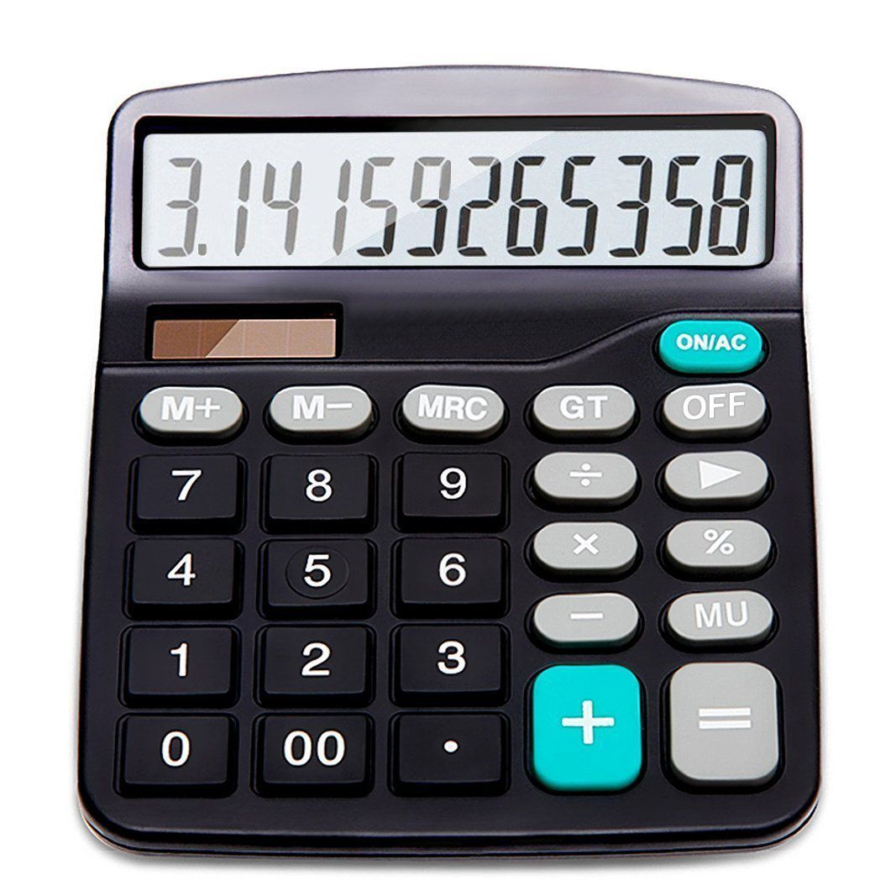

The Dawn Of Computers
Today, a computers is known as a electronical machine with which we can interact, by whatching videos or a movie, byt playing video games or chating with our friends as well a mean of work, used by people all over the world for that reason.
All what a computer does, is to help humans in their everyday life, either by entertaining them, or helping them with the work that they have. Tought, most people use it as tool for entertainment, to escape from life from time to time, there are other who use it as it was intended, when computers were firstly created.
Now, we can't say that the computer as an idea was ever discovered, we can't set a date, or say who invented it, because it goes as far back, as the first human civilizations.
The first computer, as the name means, something to make calculations with, to compute, is said to be a very simple thing, compared to the modern machines we know today. It was called, and still being used, the abacus. The abacus, is the oldest continuously used calculator tool. Although, not used so much today, the abacus was just the beginning of humankind's interaction with calculating machines, which eventualy led to the creation of what we know today as the computer.
The Counting Board
The counting board was a portable flat surface, made or either stone or wood, which the user place objects like pebbles or beads in order to maintain a count of something. The oldest counting board was found in the island of Salamis, named the Salamis Table in Greece. It is also though that it was used by the Babylonians in about 300 BC and in more of a gaming board than a calculating device. But, we have litle information about the counting board, where it originated and such questions. We know that the counting board was used in order to make simple calculations, with 10s and 100s. Such low numbers created the need for a new way of counting, a new tool that would help merchants to make much biger calculations. And this led into the creation of the abacus.
The Abacus
To simply put the abacus into words, it's a device that allows us to make manual mathematical calculations, just by sliding counter along the rows. It has rows, and columns of beads, that represent the digits of your number.
The abacus was not something that was located or invented in one part of the world. It existed in the ancient world. Most found in Mesopotamia, Egypt, Persia, Greece, China, Rime, India, Japan, Korea, Russia, and even a whole different version of it in America, used by the natives. But, we can never truly say where it was invented, or who used it first, as it apears in diferent places around the world, at the same time period. The abacus basicaly consists of a number of rows of movable beads or other objects, representing the digits.
The abacus was a powerful tool to count, that was used in all of the ancient great civilizations, like the Suan-Pan in China, the Soroban in Japan and the Shoty in Russia. The Suan-Pan was a Chinese version of the abacus, as it apears today, was first chronicled cira 1200 C.E in China.
The soroban is composed of an odd number of columns or rods, each having beads: one separate bead having a value of five, called go-dama and it was the version of the abacus in Japan. The number of rods in a soroban is always odd and never fewer than nine. The most basic models will have thirteen rods. but the number of rods in most use and practical modles often goes up to 21,23,27 and even 31, allowing for more advanced calculations.

There are many version of the abacus, created in diferent parts of the world, from Europe to Asia, the Americas all the way to Africa, all of which did one simple yet poweful calculations for the time that they existed in. Thought now everyone could use such a machine, the people who used it were knowlegeble in mathematics, using both a abacus and a piece of paper to note down the numbers from the calculations. The abacus has been around for almost two thousand years and in some cases still used today. But, today there is a simpler, much easier and faster way that we can make calculations, not needing a paper sometimes, and more reliable. That would be what we know as a calculator.
The Calculator
A calculator is an electronic device used to perform calculations, raging from basic arithmetic all the way to complex mathematics. The first solid-state electronic calculator was created in the 1060s. The pocked-sized devices became available to the public in the 1970s, especialy after the Intel 4004, the first microprocessor that was developed by Intel.
The calculator accepts input from a user, which would be a number, either small or big, and then an operator, like assingment or multiplication, followed by another number. The calculator will do the calculation and display the result on the screen. There are diferent version or calculators, like the ones that we use in our everyday lifes to make small, or dificult calculations that would take some time to do them with pen and paper. There are also the scientific calculators which include trigonometric and statistical calculations. Some calculators also have the ability to do computer algebra. There are also graphic calculators that can be used to graph functions defined on the real line, or highter-dimentional Euclidean space. Today, a basic calculator costs litle, but scientific and graphic ones tend to cost a lot more.
The electronic calculator, thought a modern invention, there was another type of calculator, invented in 1642 at the Renaissance period, by Wilhelm Schickard and several decade later by Blase Pascal. It was a device that was at times somewhat over-promoted as being able to perform all four arithmetic operations with minimal human intervention.
In the 18th century, the mechanical calculator saw some notable imrovements, first by Poleni with the first fully functional calculating clock and four-operation machine.